Инструменты для кровельных работ.

 Домкрат
Домкрат
Применяют для подъема тяжестей на небольшую высоту.
Колющее лезвиеПрименяют для раскалывания плахи на гонтины.
КолотушкаCлужит для колки плахи на гонтины.
ГладилкаПрименяется для заглаживания мастики при заделывании щелей и пазов небольших размеров.
КернерСтальной стержень, имеющий круглое сечение. Один из концов стержня заточен под углом 60°. Инструмент применяют для нанесения отметок. Его ставят в вертикальное положение и по верхнему концу ударяют молотком.
НожницыИспользуют для разрезания листовой стали. Стальной лист толщиной не более 0,7 мм режут ручными ножницами. Ножницы могут быть правыми и левыми. У левых ножниц режущий нож расположен справа, у правых – слева. Правые ножницы гораздо удобнее левых, потому что в процессе резки можно видеть отрезаемую полоску листа. Если эта полоска узкая, то она снизу сворачивается в спираль, в то время как вторая половина листа не деформируется. Левые ножницы чаще всего используются для выполнения отверстий, находящихся далеко от края листа, а также для отрезания левых краев. Отверстия, расположенные внутри листа, вырезают так: сначала при помощи зубила в листе прорубают отверстие и вставляют в него режущий нож инструмента, затем по намеченной риске в форме круга ведут нож ножниц. Листы из тонкой стали, как правило, режут на верстаке. При этом лист кладут так, чтобы при перемещении ножниц нижний нож лежал на краю верстака.
CитоИспользуют для процеживания растворов и просеивания сыпучих материалов.
ТолкушкаСлужит для перемешивания и тщательного разминания замоченной в воде глины.
КлещиИспользуют при сборке металлических листов, когда нужно загибать кромки листов.
Клещи могут быть прямые, полукруглые и кривые. Первые имеют плоские широкие губки, благодаря которым не повреждается цинковый слой металла. Они нужны при устройстве дымовых труб, вентиляционных и слуховых отверстий.
Полукруглыми клещами выполняют многие операции, например окантовку гребней, отгибы различных видов, отделку фасонных элементов кровли, разборку желобов и покрытий для их ремонта.
Кривые клещи необходимы для сборки кровли на труднодоступных участках.
Тиски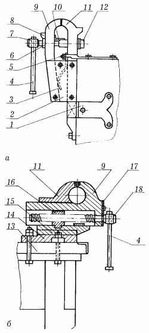
Рис. 22. Тиски: а – стуловые; б – параллельные; 1 – лапа для крепления тисков к верстаку; 2 – боковина; 3 – пружина; 4 – рычаг; 5 – планка для крепления тисков к верстаку; 6 – шайба; 7, 18 – стяжной и червячные винты; 8, 10 – козырьки; 9 – подвижная губка; 11 —неподвижная губка; 12 – втулка; 13 – верстак; 14 – нижняя плита; 15 – поворотный круг; 16 – гайка; 17 – крышка.
К зажимным приспособлениям относятся тиски, которые могут быть параллельными и стуловыми.
И параллельные, и стуловые тиски состоят из подвижной и неподвижной губок и рычагов для вращения винтов. Тиски закрепляют на верстаке.
Кровельные работы КрышаОт того, насколько хорошо сделана крыша, зависит и то, сколько простоит сруб и как долго он сохранит свой первоначальный вид. Прежде всего крыша предназначена для защиты дома и отвода от него атмосферных осадков.
От выбора формы для устройства крыши и материала для кровли зависит не только срок ее службы, но и внешний вид, который она может придать постройке. Для небольших домов лучше всего сделать высокую крышу, которая визуально увеличит здание. А для высоких домов крыша должна быть более плоской, чтобы и без того большое здание не казалось еще более громоздким.
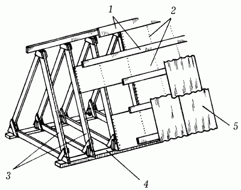
Рис. 23. Элементы крыши: 1 – обрешетка; 2 – настил; 3 – стропила; 4 – мауэрлат; 5 – кровля.
В зависимости от геометрической формы и материала кровли различают несколько типов крыш. Прежде всего разделение происходит по типу плоская или скатная. Скатная крыша может быть нескольких видов, среди которых наиболее часто встречаются односкатные, двускатные, вальмовые, мансардные, пирамидальные, шатровые, купольные, башенные.
Плоские крыши чаще всего используются при возведении хозяйственных построек: сараев, курятников, гаражей.
С крыши такого типа приходится убирать снег, и, из-за того что на ней нет скатов, она имеет небольшой срок службы.
Обязательным элементом скатной крыши является скат: чем он круче сделан, тем меньше атмосферных осадков на поверхности крыши будет скапливаться.
Односкатные крыши устраиваются на постройках, стены которых имеют разную высоту. Чаще всего такими крышами оснащаются душевые комнаты и туалеты на приусадебных участках или сарайчиках для хранения сельхозинвентаря. Особенностью такой крыши является небольшой выступающий козырек, установленный со стороны входа для того, чтобы была возможность укрыться от дождя.
Двускатные крыши чаще всего используются при возведении больших построек. Такой тип крыши имеет двухсторонний водосток. В зависимости от проектировки здания скаты могут быть расположены под разными наклонами, но чаще всего наклон остается одинаковым для обеих сторон.
Вальмовые крыши получаются в результате соединения двух треугольных торцевых скатов и двух трапециевидных боковых скатов. Достаточно часто встречается такая разновидность вальмовых крыш, которая полностью состоит из треугольных скатов, соединяющихся в одной точке.
Мансардные крыши еще называют ломаными двускатными. Они представляют собой две двускатные крыши, которые как бы насажены одна на другую. На верхней части крыши делается небольшой уклон, а нижняя часть всегда расположена практически под прямым углом к стенам.
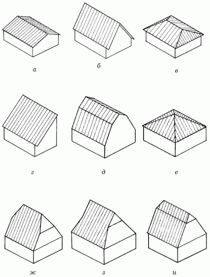
Рис. 24. Виды скатных крыш: а – пологая двускатная; б – крутая двускатная; в – вальмовая четырехскатная; г – односкатная (в форме парты); д – ломаная (мансардная) двускатная; е – шатровая четырехскатная; ж, з, и – полувальмовые (мансардные) четырехскатные.
Шатровые, купольные и башенные крыши редко полностью покрывают жилое здание и используются только на отдельных элементах построек. Такие типы крыш предназначены для украшения.
Только скатная крыша может быть с чердаком или без него. В зависимости от этого различают чердачные крыши и бесчердачные. Чаще всего последний тип еще называется глухой крышей. Наиболее удобна крыша, которая содержит еще и чердачное помещение. Именно благодаря ему облегчается наблюдение за состоянием кровли, появляется возможность легко разместить дымовые трубы или обустроить еще одну жилую комнату.
Чердачное помещение должно быть устроено таким образом, чтобы человек среднего роста мог свободно перемещаться внутри него (высота помещения – примерно 1,7–1,8 м).
СтропилаВ качестве составного элемента крыши стропила выполняют очень важную роль, поддерживая обрешетку и тем самым принимая на себя вес кровли, давление снега и ветра. По конструкции они делятся на наслонные и висячие.
Если пролет крыши (расстояние между опорами) не превышает 6,5 м, а при дополнительной опоре – 10–12 м, то используются наслонные стропила.
Висячие стропила применяют в том случае, когда пролет крыши составляет 7–12 м и нет дополнительных опор. В отличие от наслонных они передают на мауэрлат только вертикальное давление.
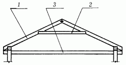
Рис. 25. Наслонные стропила: 1 – стропильная нога; 2 – ригель; 3 – чердачное перекрытие.
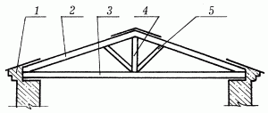
Рис. 26. Висячие стропила: 1 – мауэрлат; 2 – стропильная нога; 3 – затяжка; 4 – бабка; 5 – подкос.
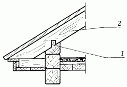
Рис. 27. Опирание наслонных стропил в деревянных рубленых или брусчатых зданиях: 1 – шип; 2 – стропильная нога.
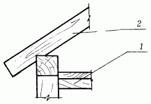
Рис. 28. Опирание наслонных стропил в деревянных каркасных зданиях: 1 – балка перекрытия; 2 – стропильная нога.
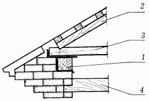
Рис. 29. Опирание наслонных стропил в каменных зданиях: 1 – мауэрлат; 2 – стропильная нога; 3 – затяжка; 4 – чердачное перекрытие.
Основным элементом висячих стропил являются стропильные ноги и затяжки нижнего пояса. В зависимости от материала, из которого выполнено здание, стропильные ноги могут крепиться:
– на верхние венцы в деревянных рубленых или брусчатых зданиях;
– на верхнюю обвязку в деревянных каркасных зданиях;
– на опорные брусья – мауэрлат – в каменных зданиях. Толщина мауэрлата при этом должна быть 150–160 мм, а сам он может быть цельным (по всей длине здания) или частичным (брусья подкладываются только под стропильную ногу).
Если стропильные ноги выполнены с небольшим сечением, то предохранить их от провисания можно с помощью решетки из стойки, подкосов и ригеля. Стойки и подкосы изготавливаются из досок шириной 150 мм и толщиной 25 мм или из деревянных пластин, полученных из бревна с диаметром не менее 130–140 мм.
При установке стропильная нога врубается в затяжку. Чтобы ее конец не скользил по затяжке и не скалывал ее, врубать ногу надо зубом, высота которого составляет 1/3 высоты затяжки, шипом или с использованием обоих способов. Кроме того, затяжка будет оставаться целой и не скалываться, если установить стропила на расстоянии примерно 300–400 мм от края. Стропильная нога врубается в конец затяжки, а зуб при этом отодвигается как можно дальше.
Для усиления крепления стропила используют двойной зуб. Высота зубов может быть одинаковой, но чаще всего их делают так, чтобы высота первого составляла 1/5 толщины затяжки, второго – 1/3. Для первого зуба на затяжке делается упор и шип, а на стропиле – проушина, для второго – только упор. В качестве дополнительного крепления стропил в затяжках можно использовать хомуты или болты. Болты применяются реже, так как ослабляют сечение стропильных ног и затяжек.
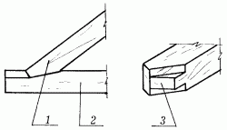
Рис. 30. Соединение стропил зубом и шипом: 1 – стропильная нога; 2 – затяжка; 3 – шип.
Подкосы с бабкой соединяются врубкой, при этом в бабке долбится гнездо, а в подкосе вырубается шип. Такое соединение в висячих стропилах укрепляется дополнительно болтами или хомутами.
Ригель со стропильными ногами соединяется врубкой сковороднем вполдерева. Соединение крепится болтом и нагелем, а для придания ему большей прочности – скобой. Составные части затяжки скрепляются между собой зубом, металлической накладкой и болтами. С бабкой затяжка соединяется хомутом.
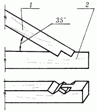
Рис. 31. Соединение стропил двойным зубом: 1 – стропильная нога; 2 – затяжка.
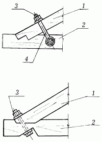
Рис. 32. Соединение стропил болтом и хомутом: 1 – стропильная нога; 2 – затяжка; 3 – болт; 4 – хомут.
Чтобы предохранить стены здания от атмосферной воды, крыша должна иметь свес длиной не менее 550 мм.
Кроме того, что концы стропильных ног крепятся в затяжке, с помощью так называемых скруток они закрепляются дополнительно за стены здания. Это позволяет уберечь крышу от повреждения при сильных порывах ветра.
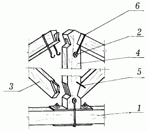
Рис. 33. Соединение подкоса с бабкой: 1 – затяжка; 2 – болт; 3 – подкос; 4 – бабка; 5 – скоба; 6 – хомут.
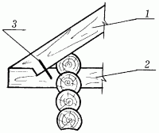
Рис. 34. Соединение ригеля и стропильной ноги: 1 – стропильная нога; 2 – ригель; 3 – скоба.
Скрутка представляет собой кусок крупной проволки, один конец которой прикреплен к стропильной ноге, а другой – к костылю, вбитому в шов каменной кладки на расстоянии 300–350 мм от верхнего края стены, или к балке чердачного перекрытия. В рубленых деревянных домах вместо скрутки используется железная скоба, соединяющая стропила со вторым венцом сруба.
Железобетонные стропильные ноги наслонных стропил одним концом укладываются на наружную стену строения, а другим – на сборный железобетонный прогон, поддерживаемый кирпичными столбиками. Выступающие за стену нижние концы стропильных ног могут нести карнизный свес кровли.
При выборе материала для изготовления стропил надо учитывать многие факторы: длину стропильной ноги, расстояние между стропилами и вес кровли.
Основание под кровлюОснование под кровлю из штучных или рулонных материалов может быть выполнено в виде обрешетки или сплошного настила. В первом случае для его изготовления используются деревянные бруски и доски.
Сплошной настил делается в том случае, когда в качестве покрытия применяются асбестоцементные плитки и рулонный материал. Под плитки доски настила выкладывают с небольшим зазором (не более 10 мм) в один слой, под рулонный материал – в два слоя (рабочий и защитный).
Узкие доски защитного слоя должны находиться под углом 45° к рабочему. Между настилами помещают противоветровую прокладку из рубероида марки РПП-300 или РПП-350.
Обрешетка применяется в том случае, когда кровельное покрытие делается из волнистых асбестоцементных листов (шифера), листовой стали, черепицы или дерева.
При изготовлении основания необходимо соблюдать два основных требования: все элементы должны быть прочно закреплены на несущих конструкциях, а их стыки над стропилами – располагаться вразбежку.
Кроме того, заданное расстояние между досками или брусками должно строго соблюдаться по всей поверхности основания. Самые широкие из них необходимо располагать под стыками кровельного материала, а также у конька и карниза, а самые толстые (на 15–35 мм толще других) – у карниза. Ширина основания под разжелобком должна составлять не менее 750–800 мм, а под карнизным свесом с настенными желобками – равняться ширине свеса. В коньках и на ребрах кровли деревянные бруски устанавливаются на ребро.
Порядок выполнения кровельных работВсе виды кровельных работ выполняются в следующем порядке:
– покрытие карнизных свесов и установка настенных желобов;
– покрытие ендов, разжелобков и слуховых окон;
– устройство воротника вокруг дымовой трубы;
– рядовое покрытие;
– устройство водосточных труб.
Покрытие карнизных свесов и установка настенных желобовСначала на карнизном свесе производят разметку расположения костылей: через 500–600 мм и на расстоянии 130–160 мм от края карниза. После этого берется первая картина и укладывается на костыли так, чтобы одна ее сторона плотно вошла в зазор отворота, другая же сторона гвоздями прибивается к обрешетке. Слева от первой внахлестку укладывается вторая картина – и так далее до образования первой горизонтальной ленты. По фронтонному свесу первый ряд картин кладут с напуском 25–30 мм за обрешетку, по карнизному свесу делают напуск 100 мм.
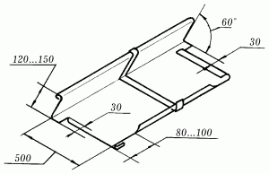
Рис. 35. Двойная картина настенного желоба.
При выполнении этих работ отогнутые кромки картин по стоку воды зацепляют, натягивают картины и уплотняют фальцы при помощи молотка и стальной рейки. Настенные желоба устанавливаются поверх свеса. Образовавшиеся фальцевые швы смазывают суриковой замазкой и уплотняют, после чего желоба склепывают с верхом крючьев.
Устройство рядового покрытияЗаготовленные листы и картины поднимаются на крышу и раскладываются по обрешетке вдоль свеса крыши так, чтобы удобно было вести работы.
Листы крепятся к обрешетке при помощи клямеров, которые отгибаются на 20–25 мм, гвоздем прибиваются к обрешетке с правой стороны картины и через 60–75 мм отгибаются по стоячему фальцу. Клямеры вырезаются из оцинкованной стали в виде полос шириной 30–40 мм и длиной 120–150 мм и скручиваются под углом 90°.
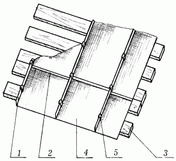
Рис. 36. Кровля из стальных оцинкованных листов: 1 – стоячий фальц; 2 – лежачий фальц; 3 – обрешетка; 4 – полотно картины; 5 – клямеры.
Картины кладут вертикальными полосами сверху вниз, от конька к свесу, соединяя их между собой лежачими фальцами. Затем лежачие фальцы промазывают замазкой и сплющивают, подложив под них стальную пластину толщиной 5–6 мм, длиной 800–900 мм, шириной 55–60 мм. При сплющивании нужно следить за тем, чтобы фальцы шли только горизонтально. После того как будет сделан первый ряд картин, приступают ко второму ряду. Картины второго ряда кладут таким же образом, чтобы край большого фальца первого ряда примыкал к маленькому фальцу второго ряда. Лежачие фальцы при этом смещают (по горизонтали) относительно друг друга примерно на 20 мм. Это делают для более удобного скрепления стоячих фальцев.
Рис. 37. Стыкование лежачего фальца: 1 – правильное; 2 – неправильное.
Стоячие фальцы скрепляют, затем, придавливая к обрешетке, большой фальц загибают по маленькому, в результате чего получается ребро высотой от 20 до 25 мм (загибать стоячие фальцы можно как после настила одной полосы, так и после настила всех полос при помощи двух молотков, начиная от конька к свесу). Загибая большой край по маленькому, нужно обращать внимание на то, чтобы ребра получались одной высоты и были тщательно уплотнены. С правой стороны устанавливают клямеры, а после этого укладывают новую полоску картин.
После того как все картины будут уложены, на верхних листах делают стоячий фальц. Для этого обрезают лишнюю часть листа по коньку с одной стороны больше, а с другой меньше, затем большой фальц загибают по маленькому и уплотняют.
Работы с кровельным железомРаботы с кровельным железом не ограничиваются только выполнением стального покрытия, к ним также относятся:
– работы на фронтонах и сплошных стенах;
– прикрепление водоотливов к стенам и дымовым трубам;
– изготовление ограждений, водосточных воронок, вентиляционных труб, свесов, желобов и водосточных труб.
Водоотлив у стены и дымовой трубы делается не менее чем на 150 мм выше уровня кровли. Листы, перекрывающие внутренний закругленный угол кровли, укладываются внахлестку не менее чем на 100 мм.
При установке вентиляционной трубы необходимо с максимальной точностью вырезать для нее отверстие в кровле, так как перекрыть большой зазор будет очень трудно. В зависимости от конструкции кровли различают два вида желобов: висячий и лежачий.
Самым распространенным считается висячий желоб с водосливным листом, изготавливаемый из стальных листов толщиной 4 мм и шириной 25 мм. Он крепится вдоль свеса кровли на скобах из полосовой оцинкованной стали, расположенных друг от друга на расстоянии 700–800 мм. Как правило, висячий желоб имеет полукруглую форму, но бывают и коробчатые желоба с прямыми углами. Они используются в основном в качестве архитектурного дополнения и являются менее экономичными из-за того, что требуют более частого ремонта в связи с острыми углами загиба.
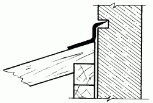
Рис. 38. Водоотлив у дымовой трубы.
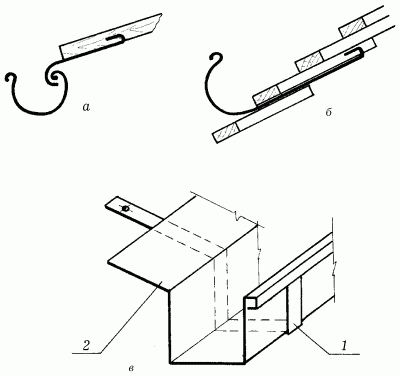
Рис. 39. Виды желобов: а – висячий желоб; б – лежачий желоб; в – висячий коробчатый желоб; 1 – скоба; 2 – желоб.
Лежачий желоб используется при отсутствии свеса, поэтому крепится непосредственно по краю кровли. Для того чтобы не нарушать стилистического единства деревянного дома, можно использовать коробчатые желоба из досок или желоба, выдолбленные из половины бревна и пропитанные предварительно антисептиком.
Диаметр водосточных труб зависит от количества поступающей в них воды. Так, диаметр водосточной трубы для кровли площадью 30 м2составляет 80 мм, для кровли площадью 50 м2– 90 мм, для кровли площадью 125 м2– 100 мм. Устанавливаются водосточные трубы на расстоянии не менее 30–35 мм от стены и крепятся к ней при помощи хомутов и замурованных штырей с ухватами. Для того чтобы штыри не ржавели, они должны быть оцинкованными или покрытыми каким-либо антикоррозийным составом.
Кровля из волнистых асбестоцементных листовЭтот тип покрытия чаще всего используют при строительстве малоэтажных жилых домов с уклоном кровли 25–45°. Кровля из асбестоцементных листов отличается достаточной прочностью, долговечностью, огнеустойчивостью и экономичностью.
Обрешетка под такую кровлю делается из брусков сечением 50 х 50 или 60 х 40 мм, которые прибиваются на расстоянии 500 мм друг от друга, что составляет чуть меньше половины асбестоцементного листа.
Желательно, чтобы кровельные работы выполняли 4 человека. Перед началом необходимо рассортировать все листы в зависимости от направления их укладки. Если укладка ведется справа налево, то листы надо подобрать так, чтобы крайняя правая волна на них была рядовой, а крайняя левая – перекрываемой. У стандартных асбестоцементных листов высота рядовой волны составляет 54 мм, а перекрываемой – 45 мм. Отобранные листы собираются в стопки по три обычных и одному укороченному и размещаются вдоль стены.
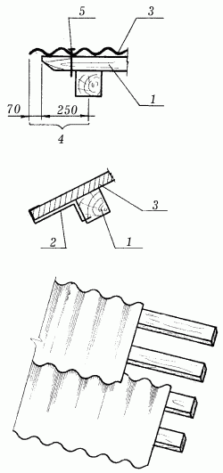
Рис. 40. Крепление асбестоцементных волнистых листов: 1 – бруски; 2 – скоба; 3 – лист; 4 – свес фронтона; 5 – гвоздь.
Для ведения монтажа необходимо сделать подмостки и приготовить прочную веревку. Один человек подает листы своему напарнику, находящемуся на подмостках, а двое других, стоя на обрешетке, принимают и устанавливают.
Для того чтобы асбестоцементные листы прикрепить к обрешетке, в них делают 3–4 отверстия для гвоздей и шурупов. Отверстия проделывают с помощью дрели таким образом, чтобы они располагались на гребне волны, а их диаметр был примерно на 2–3 мм больше диаметра гвоздя или шурупа.
Кровельные работы начинаются с карнизного ряда, правильность установки которого контролируется шнуром-причалкой. Кладут листы снизу вверх горизонтальными рядами. Соседние листы соединяют внахлестку на целую волну или на ее половину. Листы второго ряда напускают на листы первого ряда на 100–150 мм (величина напуска зависит от того, какой у крыши уклон: чем он больше, тем напуск меньше).
Для удобства работ перед их началом вдоль карнизной доски крепят противоветровые скобы (по две на каждый лист), так чтобы своими отогнутыми концами они крепко удерживали асбестоцементный лист за гребни волны. После того как будет уложен первый ряд, по нему мелом или карандашом намечается линия нахлестки и укладывается второй ряд.
Асбестоцемент крепят к основанию оцинкованными гвоздями длиной 70–90 мм или шурупами, под шляпки которых подкладывают шайбы из оцинкованной стали, резины либо прокладки, сделанные из двух слоев рубероида. Гвозди в обрешетку следует забивать сверху через лист асбестоцемента, в противном случае на последнем могут образоваться трещины и сколы.
После окончания кровельных работ шляпки гвоздей, а также все имеющиеся трещины покрывают суриковой замазкой.
Укладывать асбестоцементные листы можно двумя способами: вразбежку, смещая их в сторону в каждом вышележащем ряду, или строго один над другим.
Более надежным и простым является первый способ, так как при укладывании листов друг над другом без смещения один лист по краям перекрывается четырьмя соседними, в результате чего образуются щели, через которые может проникать влага. Чтобы избежать этого, предварительно углы листов необходимо обрезать.
Последний этап – покрытие конька, к которому прибивают специальный, с закругленной верхней гранью коньковый брусок, имеющий сечение 100 х 60 мм. Затем брусок закрывают полосами рулонного материала и укладывают на него готовые асбестоцементные детали КПО-1 и КПО-2. Первую деталь кладут широким раструбом в сторону фронтона. Для гвоздей делают отверстие (два на плоском отвороте, два на оси выпуклой части). Отверстия на плоском отвороте делают так, чтобы они проходили через гребни волн асбестоцементных листов.
Вместо готовых деталей для конька можно использовать две сбитые под углом доски, установленные поверх листов и прибитые к ним гвоздями. Следует обратить внимание на то, что подшивать карнизы и крепить фронтонные доски удобнее до начала кровельных работ. Так, оголенная обрешетка будет выполнять роль лестницы, а работы можно вести как снизу, так и сверху.
Кровля из асбофанерыКровля из асбофанеры отличается огнестойкостью, долговечностью, легкостью монтажа, но имеет один недостаток – хрупкость. Применяется в основном при строительстве дачных домиков.
Обрешетка для кровли делается из деревянных брусков сечением 50 х 50 мм. Монтаж начинается с карнизного ряда. После того как он будет полностью выложен, над ним укладывается второй ряд с нахлестом в 100–140 мм в зависимости от уклона крыши: чем круче скат, тем меньше напуск листов.
В горизонтальных рядах листы тоже укладываются внахлестку на полволны или на целую. Конек и ребра покрываются специальными коньковыми элементами либо сбитыми под углом досками. К обрешетке листы асбофанеры крепятся специальными шиферными гвоздями, под которые подкладываются две шайбы: верхняя из кровельного железа, нижняя из толя и рубероида. По окончании работ шляпки гвоздей покрываются олифой или суриковой замазкой.
Черепичная кровляСамой красивой из всех известных кровель является черепичная. К тому же она долговечна, огнестойка и легка в эксплуатации: ремонт такой кровли, как правило, заключается в замене отдельных, пришедших в негодность черепиц. Но не следует забывать, что черепичная кровля очень тяжелая, поэтому конструкция крыши под нее должен быть более массивной. Уклон черепичной кровли – не менее 40–45°.
Обрешетку под черепичную кровлю делают из досок или брусков сечением 50 х 50 или 60 х 40 мм, укладывая их вдоль карниза. Шаг обрешетки зависит от размеров черепицы. Доски или бруски надо располагать так, чтобы вышележащая черепица легко входила в венчик нижележащей и чтобы количество черепиц, уложенных как вдоль, так и поперек крыши, равнялось целому числу. Прибивают бруски в направлении от конька к карнизу. После того как обрешетка будет готова, по краю карниза укладывают доски шириной 150 мм с прикрепленной по карнизному краю уравнительной рейкой.
Выполнение кровельных работ с использованием черепицыПодняв черепицу на крышу, ее раскладывают таким образом, чтобы можно было укладывать сразу в 2–3 рядах. Для складирования материала используют ходовые мостики длиной 5 м. Все работы кровельщик выполняет, сидя на треугольной скамейке, укрепленной на обрешетине.
Существует два способа укладки плоской ленточной черепицы: двухслойный и чешуйчатый. Независимо от способа укладки работы сначала производятся на основных скатах, затем на вальмовых, ребрах и коньке. На скатах черепица укладывается параллельными рядами вдоль карниза по направлению к коньку, так чтобы каждый последующий ряд перекрывал предыдущий. При этом все нечетные ряды должны начинаться и заканчиваться целыми черепицами, а все четные – половинками. Таким образом, в каждом ряду происходит смещение плиток относительно друг друга. Черепица первого ряда, уложенная на две нижние обрешетины, цепляется своими шипами за внутреннюю грань верхней обрешетины. Во втором ряду она крепится за верхний торец первого ряда черепицы. Далее крепление черепицы осуществляется, как в первом ряду, а в приконьковом ряду, как во втором.
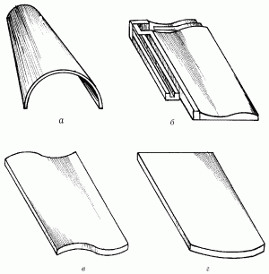
Рис. 41. Виды черепицы: а – коньковая ленточная черепица с двойным загнутым краем; б – ленточная черепица с загнутым краем; в – ленточная черепица с двойным загнутым краем «противень»; г – ленточная черепица с двойным загнутым краем «бобровый хвост».
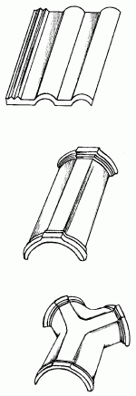
Рис. 42. Виды керамической черепицы.
Вне зависимости от уклона крыши каждую черепицу, уложенную вдоль фронтальных и карнизных свесов, крепят к обрешетке. В других рядах закрепляют только каждую вторую или третью.
К обрешетке плоская черепица крепится при помощи гвоздей или клямеров попарно. После того как черепицы шипами зацепляются за обрешетку, клямеры устанавливают по всему ряду, так чтобы их правый горизонтальный отворот находился сверху черепицы. Под левый отворот подводится смежная черепица. Сверху отвороты закрываются вышележащим рядом. Концы клямерных крючков забивают в обрешетку со стороны чердака.
Чаще всего из всех существующих видов плоской ленточной черепицы используется черепица типа «бобровый хвост», которую укладывают на растворе в один ряд. В этом случае расход материала на 1 м2составляет 32 штуки; а если же покрытие выполняется в два ряда, то расход материала увеличивается до 45 штук.
Для приготовления раствора необходимо взять 1 часть извести, 5 частей песка и 1 часть цемента, все тщательным образом просеять, перемешать и залить водой. При этом необходимо обратить внимание на то, чтобы раствор не получился слишком жирным, в противном случае при затвердевании он даст трещины. Количество цемента должно строго соответствовать норме, так как его излишек придает раствору дополнительную прочность, что приведет к лишнему расходованию кровельного материала при ремонте.
Плоская ленточная черепица типа «противень» укладывается без раствора справа налево двумя слоями или слоем в виде чешуек, так чтобы верхний ряд перекрывал нижний. Черепицу этого типа крепят при помощи клямеров или гвоздей.
Пазовая ленточная черепица отличается от плоской ленточной наличием продольных закроев, обеспечивающих более плотное соединение материала. Используют ее чаще всего для покрытия простых по конфигурации крыш: односкатных или двускатных. Укладка ведется только в один слой, начинаясь от фронтона вдоль карнизного свеса и продолжаясь параллельными рядами по направлению к коньку. Черепица выкладывается с напуском по ширине на ширину паза, а по длине на 75–80 мм. Нижние два ряда выполняются с подмостей или лесов, а последующие – со скамейки.
Пазовая штампованная черепица, в отличие от ленточной, имеет еще и поперечные закрои. Таким образом, по всему периметру черепицы соединяются между собой закрытыми фальцевыми сопряжениями, предотвращающими проникновение атмосферных осадков.
Черепицу этого вида кладут от свеса к коньку в один слой, делая напуск по ширине и длине на ширину паза или фальца. Прикрепляют его при помощи проволоки, проходящей через ушко черепицы, к гвоздю, предварительно вбитому в обрешетку.
Для того чтобы черепичная кровля не продувалась ветром, все горизонтальные межчерепичные швы со стороны чердака промазывают глиной, известково-песчаным раствором, смешанным с соломенной резкой, или раствором из цемента либо извести с небольшим добавлением волокнистых материалов.
Конек крыши и ребра покрываются коньковой желобчатой черепицей. На коньке она укладывается в том же направлении, что и на скате, а на ребрах – всегда снизу вверх. Место соединения ребер с коньком заделывается кровельной розеткой из оцинкованной стали и цементным раствором. Желобчатая черепица укладывается на раствор и крепится проволокой, один конец которой вдевается в ушко, а другой привязывается к гвоздю, вбитому в обрешетину.
Деревянные кровлиДерево не самый лучший, хотя и дешевый материал для кровли, так как оно часто ломается, рассыхается, загнивает или сгорает. Но если правильно ухаживать за деревянной кровлей, она может служить до 15 лет. Кроме того, деревянные кровли легки, просты в устройстве, а в местностях, где поблизости имеется лес и приобрести этот материал не составляет особого труда, еще и экономичны. Такой вид кровли очень хорошо зарекомендовал себя при постройке небольших садовых домиков. Уклон деревянной кровли – 28–45°.
Обрешетка выполняется из брусков сечением 50 х 50 мм или жердей диаметром 60–70 мм, обтесанных на два канта. Карниз кровли и верхняя приконьковая часть выкладываются из укороченных материалов, а рядовое покрытие – из полномерных.
Тесовая кровляТесовая кровля может быть одно– и двухслойной. Доски для нее заготавливают прямые, ровные, без сучков и гнилых мест. Лучшее покрытие получается из строганых досок хвойных пород дерева толщиной 19–25 мм. Для того чтобы они служили дольше, их предварительно обрабатывают антисептиком, а готовую кровлю каждые 3–4 года покрывают двумя слоями масляной водостойкой краски любого цвета. Как известно, усыхание древесины может привести к образованию многочисленных трещин на ее поверхности. Чтобы этого не случилось, доски нижнего ряда покрытия необходимо укладывать выпуклостью годовых колец вверх, а верхнего ряда – вниз.
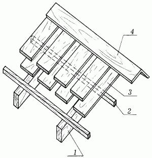
Рис. 43. Тесовая кровля: 1 – стропильная нога; 2 – обрешетина; 3 – доска; 4 – коньковая доска.
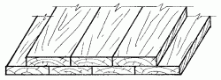
Рис. 44. Тесовая двухслойная кровля.
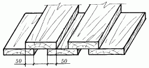
Рис. 45. Тесовая однослойная кровля, крытая вразбежку.
Кладутся доски перпендикулярно к коньку. При двухслойной кровле первый и второй слой досок укладывают впритык, не оставляя зазоров. При однослойном покрытии доски кладут вразбежку: первый ряд с зазором, который потом перекрывается досками второго ряда.
Для прикрепления нижних досок к обрешетке в их середину вбивается гвоздь длиной 70 мм, а для прикрепления верхних по краям вбиваются два гвоздя длиной 100 мм. Конек и ребра перекрываются досками толщиной 25 мм, а швы между досками – специальными нащельниками. Для придания кровле особой декоративности доски можно располагать параллельно коньку, соединяя их внахлестку и располагая выпуклостью годовых колец вниз.
Кровля из драниКровля из драни традиционно используется в лесных районах Украины. Она отличается особой декоративностью, ярко выраженным национальным колоритом, легка и проста в изготовлении. Уклон кровли из драни составляет 28–45°. Обрешетка под такое перекрытие делается из жердей или брусков сечением 50 х 50 мм, которые прибиваются на расстоянии 200–300 мм друг от друга.
Кровля из драни бывает двух-, трех– и четырехслойной. В горизонтальных рядах каждая дранка должна перекрывать другую на 25–30 мм. По скату верхние дранки перекрывают нижнюю на половину длины при двухслойном покрытии, на 2/3 длины при трехслойном и на 3/4 при четырехслойном покрытии. Первый укороченный ряд драни укладывают ворсистой стороной вниз, а все остальные – ворсистой стороной вверх так, чтобы ворс был направлен по стоку воды. Все драницы в каждом ряду укладываются внахлестку на 1/2 или 1/3 ширины. К обрешетке дрань прибивается гонтовыми гвоздями размером 1,5 х 70 мм. Горизонтальность укладываемых рядов проверяют по рейке, в которую упираются концы драниц. Конек делается из двух досок, прибитых поверх драночного покрытия.
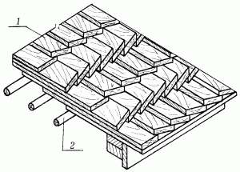
Рис. 46. Кровля из драни: 1 – дрань; 2 – обрешетка из подтесанных жердей.
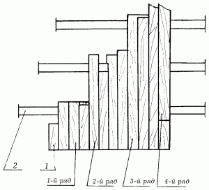
Рис. 47. Укладка драни: 1 – дрань; 2 – обрешетка.
Кровля из стружкиОбрешетка делается точно так же, как под кровлю из драни. Карниз и приконьковая часть выполняются из укороченного материала, а рядовое покрытие – из полномерного. Кровли для жилых домов обычно делают четырех– или пятислойными, для хозяйственных построек – трехслойными. При трехслойном покрытии каждый последующий ряд перекрывает предыдущий на 2/3 длины стружки, при четырехслойном – на 3/4 и при пятислойном – на 4/5.
Гонтовая кровляГонтовая кровля самая трудоемкая среди всех деревянных покрытий, но ее несомненными преимуществами являются прочность, долговечность и привлекательный внешний вид.
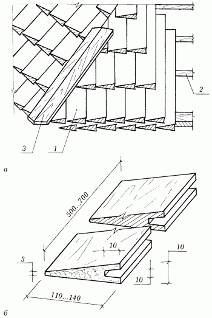
Рис. 48. Гонтовая кровля: а – общий вид; б – гонтина; 1 – гонт; 2 – обрешетка; 3 – доски.
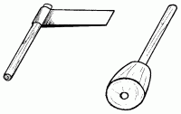
Рис. 49. Колющее лезвие и колотушка.
Гонтовое покрытие отличается меньшей массой по сравнению с шиферным или черепичным, поэтому под него можно выбрать более легкую конструкцию кровли. Под гонтовое покрытие не рекомендуется подкладывать какой-либо рулонный материал в качестве гидроизоляции, так как он препятствует вентиляции гонта, вызывая его загнивание. Уклон гонтовой кровли – 30–50°. Обрешетка под кровлю делается из жердей и брусков сечением 50 х 50 мм, с шагом, равным 1/3 длины гонта.
Чаще всего гонт изготавливается из древесины хвойных пород, а также дуба или бука методом ручной колки или распиливания. Второй способ предпочтительнее, так как материал, полученный при распиливании, имеет шероховатую поверхность, впитывающую большее количество влаги, чем колотый. Лучшим считается колотый гонт из прямоствольной смолистой сосны.
Чтобы заготовить гонт самостоятельно, необходимо взять бревна диаметром 300–400 мм, распилить их на куски длиной 400 мм, каждый кусок расколоть топором на 3–4 плахи толщиной 80–100 мм и каждую плаху с помощью колющего лезвия и колотушки расколоть на гонт толщиной 8–10 мм. Для этого плаха вставляется в тиски, сверху на нее наставляется лезвие, по которому наносятся короткие и жесткие удары колотушкой. Полученный гонт можно использовать сразу, пропитав его предварительно антисептиком.
Гонтовые кровли обычно бывают трехслойными. В каждом ряду острые края гонтин должны плотно входить в пазы на утолщенном ребре соседних гонтин, а вышележащие гонтины – перекрывать стыки между ними. При этом чем меньше угол уклона, тем больше гонтины должны перекрывать друг друга. Минимальное перекрытие составляет половину длины гонта. Каждая гонтина в верхней своей части прибивается к основанию кровли так, чтобы гвоздь входил в обрешетку не менее чем на 20–25 мм.
Вдоль свеса кровли прибивается доска, толщина которой должна равняться толщине гонта, на коньке гонт соединяется впритык.
Кровля из рулонных материаловКровли из рулонных материалов легки, экономичны и в том случае, когда выполняются с соблюдением всех технологических требований, достаточно надежны. К их недостаткам можно отнести малую огнестойкость, небольшую механическую прочность, поэтому чаще всего их используют при строительстве хозяйственных зданий.
Кровли из рулонных материалов представляют собой гибкий изоляционный ковер, который настилается насухо или наклеивается на основание при помощи горячих и холодных мастик.
Рулонные кровли выполняются одно-, двух– или трехслойными. В толевых кровлях оба слоя делаются из пергамина или подкладочного рубероида. Как правило, такой вид кровли применяется на пологих скатах, уклон которых не превышает 12°.
Основание под кровлю может быть одно– или двухслойным. Последнее предпочтительнее. Однослойное сплошное основание делается из досок толщиной 25 и шириной 90–120 мм. Первый, несущий, слой двухслойного основания выполняется из досок толщиной 25 и шириной 100–120 мм, уложенных с зазором 45–50 мм. Второй, выравнивающий, делается из досок толщиной 15–20 и шириной 80–100 мм, уложенных вплотную друг к другу под углом 45° к карнизу.
Для того чтобы кровельный материал при работе не скатывался, предварительно его надо подержать некоторое время в раскатанном виде или перемотать в рулон обратной стороной.
При покрытии насухо рулонный материал настилается в два слоя: один вдоль карниза, другой перпендикулярно к нему. Каждый слой по краям прибиваемых гвоздями.
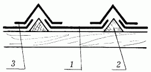
Рис. 50. Устройство кровли с использованием треугольных брусков: 1 – рулонный материал; 2 – треугольный брусок; 3 – насадка из рубероида или толя.
Окончательное крепление покрытия осуществляется с помощью реек сечением 30 х 30 мм, прибитых перпендикулярно к карнизу.
Покрыть кровлю рулонным материалом сухим способом можно и по-другому. Для этого к обрешетке перпендикулярно к карнизу прибиваются треугольные бруски сечением 50 х 50 мм. Расстояние между брусками должно быть меньше ширины рулонного материала на 100 мм. Разрезанные заранее полотна двойным слоем укладываются между брусками и прибиваются толевыми гвоздями через каждые 500 мм. В таком случае на гребне бруска получается шов, который перекрывается накладкой из сложенного вдвое толя или рубероида. Затем накладка прибивается толевыми гвоздями. На свесах крыши рулонный материал заворачивается под обрешетку на 100 мм и закрепляется толевыми гвоздями. На коньке и ребрах он загибается на 150 мм и прижимается двумя досками толщиной 25 и шириной 150 мм.
Кровельные работы с использованием мастики начинаются с подготовки деревянного основания. Для этого на него в качестве грунтовки наносится растворенный в керосине, бензине или солярном масле битум в соотношении 2: 1. Раствор готовится из расплавленного остывшего битума (при температуре не выше 75–80 °C), который небольшими порциями добавляется в растворитель. Смесь перемешивается до получения однородной массы и процеживается через металлическую сетку с ячейками разметом 3 мм.
Рекомендуется наложить два слоя грунтовки толщиной 1–2 мм каждый – так будет обеспечена более высокая степень сцепления битумной мастики с материалом покрытия.
Перед наклеиванием материал надо сначала подготовить: шпателем или жесткой щеткой полностью счистить посыпку с нижней стороны, а с верхней только на стыковочной полосе длиной 100–150 мм. Причем крупнозернистую слюдяную и песчаную посыпку необходимо предварительно обработать растворителем, а тальковую – керосином.
Подготовленный рулонный материал расстилают, отрезают кусок нужной длины, затем скатывают и быстро покрывают основание мастикой на ширину рулона. Затем ногой на промазанную поверхность накатывают рубероид или толь, равномерно прижимая его, особенно по краям, на месте стыков. Для удобства выполнения этой операции рекомендуется надеть обувь на мягкой подошве без каблука.
Однослойное покрытие накладывается параллельно карнизу снизу кровли. Листы кладутся внахлестку с напуском верхнего ряда на нижний 100–150 мм. При двухслойном покрытии первый слой накладывается перпендикулярно к карнизу, а второй – параллельно ему. После покрытия кровли рулонным материалом ее покрывают битумной мастикой и присыпают сухим просеянным песком.
Чтобы продлить срок службы рулонной кровли, ее можно дважды покрыть алюминиевой краской, смешанной с битумным лаком: первый раз кистью, второй раз краскопультом. Перед окрашиванием крышу необходимо очистить от грязи и пыли. При нанесении первого слоя покрасочная смесь должна содержать 8 % алюминиевой пудры, а при нанесении второго – 16 %. Все работы необходимо закончить не позднее 3 ч с момента их начала, в противном случае краска расслаивается и становиться непригодной к употреблению.
Приготовление нефтебитумной мастикиМастика представляет собой битум, смешанный с разного рода наполнителями и пластификаторами. В качестве наполнителя могут использоваться сухая древесная мука, измельченный и просеянный торф или лесной мох, рубленая минеральная вата.
Независимо от вида все наполнители должны быть хорошо измельчены и просушены и не способны к образованию комков.
Из пластификаторов чаще всего используют отработанное автомобильное масло, объем которого в мастике не должен превышать 5 %. По сравнению с чистым расплавленным битумом мастики обладают рядом преимуществ: при низких температурах они менее хрупки, размягчаются при более высоких температурах, обеспечивают прочное приклеивание рулонных материалов.
Мастика готовится в специальном варочном котле с хорошо пригнанной крышкой. Котел ставится на металлическую треногу, которая обкладывается кирпичной кладкой, так чтобы получилась топка. Устанавливать котел на треногу необходимо с небольшим уклоном во избежание загорания выливающегося битума. С той же целью не следует загружать битум в котел более чем на 3/4 его емкости.
Мастику готовят из смеси нефтебитумов марок 3 и 5. Для этого в котел сначала помещают куски легкоплавкого битума марки 3. Котел ставят на огонь и, помешивая битум деревянной лопаточкой, доводят его до полного растворения. После того как на поверхности битума исчезнет пена, в него маленькими кусочками добавляют битум марки 5 и доводят температуру всей массы до 200 °C.
Ни в коем случае нельзя допускать перегрева мастики, так как при более высокой температуре она теряет свои качества. Мастика считается готовой, когда ее поверхность перестает пениться и становится стекловидной.
После этого в нее небольшими порциями засыпают подогретый на железных листах наполнитель, расплав постоянно помешивают. Очередную порцию наполнителя засыпают только после того, как опадет пена. Затем в мастику добавляют пластификатор и опять тщательно перемешивают смесь.
При нанесении мастики на поверхность она очень быстро остывает, поэтому использовать ее надо сразу же после приготовления, не давая ей остыть ниже 120 °C.